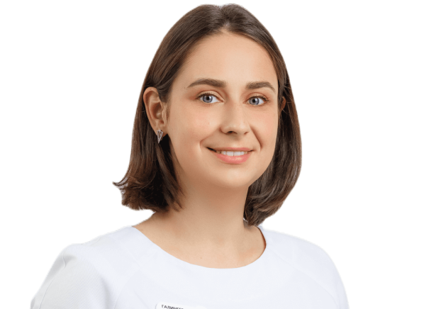
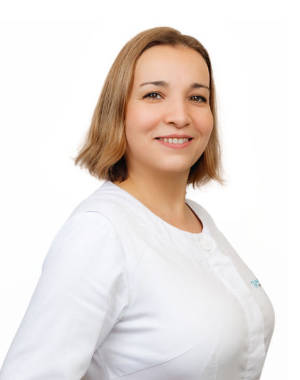
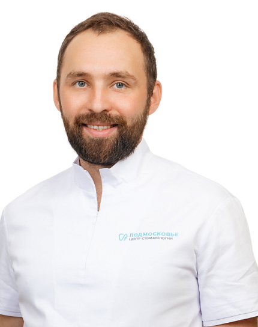
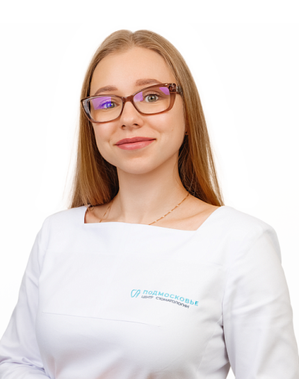
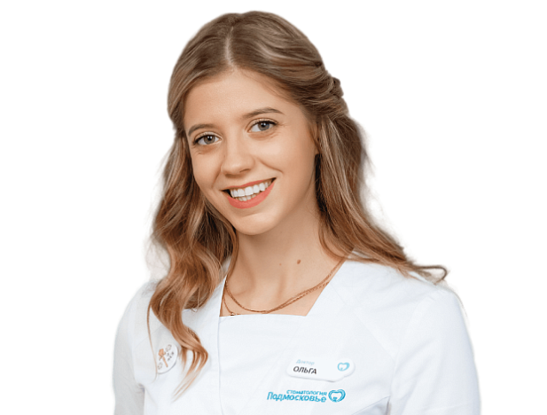

ЗАКС
методика ингаляционной анестезии на основе закиси азота ЗАКС (поверхностная седация пациент не спит)
поверхностная седация пациент не спитАнестезиологи Подмосковья — настоящая гордость: суперпрофессионалы, с огромным опытом работы в медицине катастроф. У наших детских стоматологов и хирургов-имплантологов внушительный опыт работы в седации. Не сомневайтесь качественное лечение зубов за один прием без боли и страха существует!
ЗаписатьсяВы очень боитесь стоматологов и врачей в принципе
Вроде не боитесь, но заходя в стоматологию испытываете тревожность и переживаете
У вас аллергическая реакция на лекарства для местной анестезии
Имеется сильный рвотный рефлекс
При длительных манипуляциях, при объемном хирургическом вмешательстве, при удалении сложных зубов, имплантации, костной пластике
Для ваших детей, если они гиперактивны
Совсем маленьким непоседам для удаления «молочных» зубов, при пластике уздечки языка, при лечении кариеса или пульпита
Особенным детям с ОВЗ
При внеплановом и срочном лечении, когда острая боль, отек, вы приехали из другого города и требуется оперативная помощь, а из-за волнения, страха повысилось давление.
Без боли и страха
Введение анестезии под цифровым контролем и лечение: под легкой седацией, в наркозе.
Под контролем анестезиолога-реаниматолога!
методика ингаляционной анестезии на основе закиси азота ЗАКС (поверхностная седация пациент не спит)
поверхностная седация пациент не спит
полностью безопасный состав для внутривенной анестезии (пациент спит, самостоятельно дышит, глотает)
пациент спит, самостоятельно дышит, глотаетвысокоэффективный ингаляционный анестетик с высочайшим профилем безопасности
пациент спитСпособ обезболивания подбирают анестезиологи с учетом возраста, веса пациента, показаний к применению, объема планируемых стоматологических работ
Для адаптации маленьких детей. При выраженном волнении и тревожности
Если имеется рвотный рефлекс.
Маленьким непоседам для проведения проф. гигиены, лечения зубов (кариес, пульпит). Рекомендуется при не очень продолжительном по времени лечении.
Проведение сложного и длительного лечения (лечение и удаление зубов, имплантация, костная пластика)
Возможность провести значительный объем лечения в одно посещение
Выраженный рвотный рефлекс
Повышенное или нестабильное артериальное давление
Дентофобия
У детей и взрослых:
У взрослых: проведение сложного и длительного лечения, в т.ч. в одно посещение
У детей: возраст до 3-х лет, планируемый большой объем лечения зубов
Дети от 3х лет
Дети от 12 лет
Взрослые пациенты
Дети от 1 года
Взрослые пациенты
Возраст до 3х лет
Аллергия на действующее вещество препарата
ОРВИ, ОРЗ
Нарушение носового дыхания
Любое инфекционное заболевание
Заболевания ЦНС
Возраст до 12 лет
Аллергия на действующее вещество
Заболевание сердечно-сосудистой системы
Заболевание печени, почек
Нарушение липидного обмена
ОРВИ, ОРЗ
Бронхиты, бронхиальная астма в обострении
Заболевания ЦНС
Лечение больше 3х часов у детей и больше 5 часов у взрослых
Беременность (по жизненным показаниям).
Возраст до 1 года
ОРВИ, ОРЗ
Обострение хронического заболевания
Сахарный диабет в стадии декомпенсации
Анемия
Тяжелая патология ССС, печени, почек
Индивидуальная аллергическая реакция на севоран
Ребенок в сознание, слышит, понимает, разговаривает
Возможность провести лечение без страха и волнения
Профилактика формирования дентофобии
Быстрое восстановление после манипуляции
Не требует дополнительного обследования перед проведением
Автоматизированная программа расчета скорости и объема введения препарата
Высокая управляемость седацией
За один прием можно выполнить большой объем лечения разными специалистами
Отсутствие тревожности и волнения
Стабилизация артериального давления в процессе всего лечения
Быстрое пробуждение, без неприятных ощущений.
Снижение риска осложнений во время и после лечения
Минимальное воздействие на организм
Быстрое начало действия наркоза и легкое пробуждение
Удобство применения для пациента: ингаляционный способ введения позволяет избежать стресса
За 1 визит можно вылечить несколько зубов
Седативный эффект достигается подачей газа, состоящего из смеси закиси азота и кислорода, через маску из специального аппарата.
Ребенок чувствует расслабленность, снижает восприятие внешних раздражителей.
ЗАКС не обладает обезболивающим эффектом, требуется применение местной анестезии для обезболивания.
Пропофол вводится строго дозировано через инфузомат внутривенно.
Пациент засыпает в течении 5-6 минут.
Измерение всех параметров жизнедеятельности на протяжении всего лечения.
Погружение в наркоз происходит поэтапно: пациенту подают через маску ингаляционный анестетик — Севоран, пациент засыпает, вводятся препараты, далее анестезиолог подключает к ИВЛ.
Пациента подключают к мониторингу для контроля всех параметров жизнедеятельности на протяжении всего лечения.
Не требует дополнительного обследования перед проведением.
Перед приемом не стоит плотно кормить. Легкая еда за 2 часа до приема.
Консультация анестезиолога
Голодная пауза 4-6 часов, водная пауза 2 часа до лечения
ЭКГ с расшифровкой
Консультации профильных специалистов (при наличии хронических заболеваний)
Общий анализ крови, дополнительные исследования по показаниям
Консультация анестезиолога
Голодная пауза 4-6 часов, водная пауза 2 часа до лечения
ЭКГ с расшифровкой
Консультации профильных специалистов (при наличии хронических заболеваний)
Общий анализ крови, дополнительные исследования по показаниям
Приходите! У нас индивидуальный подбор препаратов, оборудование последнего поколения и сертифицированные врачи, которые профессионально работают со всеми видами анестезии.

Анестезиолог
«Наша клиника, одна из немногих клиник города, где под рукой у анестезиолога-реаниматолога всегда в наличии антидот Дентролен (производства Германии).Записаться на консультацию →
Препарат используется для купирования гипертермии тела во время сна, возникающей у одного из 15 000 пациентов.
Обратите внимание на этот момент, при выборе клиники, где планируете лечение во сне.
Мы не экономим на БЕЗОПАСНОСТИ, уделяем огромное внимание неотложной помощи!»

Хирург-имплантолог
«В Центре стоматологии «Подмосковье» мы используем строго индивидуальный подход.Записаться на консультацию →
Мы остановили свой выбор на трех самых действенных и безопасных видах общей анестезии — для каждого пациента мы подбираем свою методику, препарат и его концентрацию, исходя из индивидуальных особенностей. Поэтому каждый, кто проходит лечение, имплантацию или протезирование в нашем центре, может чувствовать себя в полной безопасности!»

Детский стоматолог
«Каждого малыша мы стараемся лечить договариваясь, без наркоза. Но что делать, если ребенок очень маленький или гиперактивный, а разрушенных зубов очень много и несмотря на все старания родителей и врача на адаптационных визитах, малыш не соглашается даже на осмотр? Тут нам на помощь приходят анестезиологи с общей анестезией. Современные методы такие как: седация и наркоз дают возможность проводить лечение непосед качественно, безболезненно и безопасно.Записаться на консультацию →
Мы против лечения деток насильно с жестким удержанием! Мы хотим, чтобы ребенок не боялся стоматолога, а полностью ему доверял и улыбался.»
Безопасность складывается из нескольких показателей

Результаты обследования направляются на почту стоматологии: narkoz@mc-podmoskovie.ru с пометкой ФИО пациента.
При первичном обращении на услуги лечения в наркозе необходима консультация не только стоматолога, но и анестезиолога, очный осмотр.
Записаться на консультациюАнестетики предыдущих поколений, как ингаляционные, так и внутривенные, были достаточно токсичными. Так, метаболизм летучего анестетика галотан (фторотан) в печени составляет 20%, а при распаде этого анестетика в печени и почках образовывались достаточно токсичные метаболиты, которые вызывали «загруженность» пациента, спутанность сознания, сонливость и общую слабость. Плюс, еще несколько лет назад не было таких чутких и надежных многофункциональных систем мониторинга.
Читать подробнее →Оставьте заявку
Администратор перезвонит и согласует дату и время приема
«Хочу поблагодарить персонал клиники Подмосковье анестезиолога Кристину Викторовну Шуст и заведующую отделением детского возраста Марию Николаевну Коренюк. 14.08.2024 была проведена операция под общей анестезией моему сыну Александру с лечением зубов. Хочу отметить профессионализм обоих врачей. Операция была проведена выше всяких похвал. Была видна настоящая забота о ребенке, бережное отношение к нему. Особо мне понравилось открытость врача к родителям. Дальнейшее консультирование и контроль за состоянием ребенка. Надеемся на дальнейшее сотрудничество. Семья Полежаевых».
«Впервые в своей жизни почувствовал себя спокойно в стоматологии и даже насколько это возможно получил удовольствие. От порядка, чистоты, слаженной командной работы, понятному сопровождению. Спасибо хирургу Глебу Сергеевичу Тайхузину и анестезиологу Сокову Андрею Александровичу. Получил новые зубы на имплантатах без боли и всех этих переживаний. Цена оправдана отношением к людям и высоким профессиональным подходом. Респект, буду рекомендовать всем своим знакомым и конечно же теперь ваш клиент пожизненно».
«Это лучшая стоматология с высококлассными специалистами! Профессионалами своего дела! У меня особенный ребенок с инвалидностью. Только в этой клинике не побоялись нас взять на лечение! Лечение было под наркозом! Все прошло отлично! От всей души благодарим Ольгу Ивановну Галингер, Смекалову Светлану Олеговну за такую возможность и всю команду за профессионализм и слаженную работу процветания вам и благодарных пациентов. От маленького пациента Арсения».